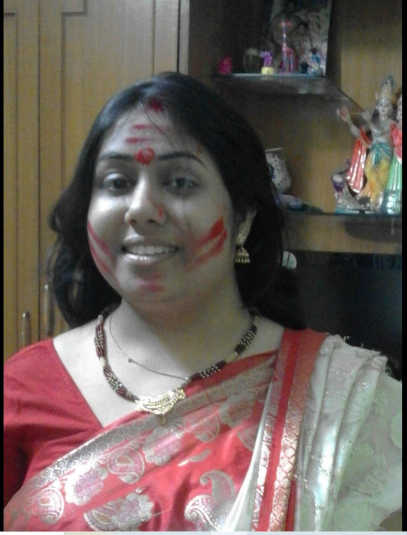
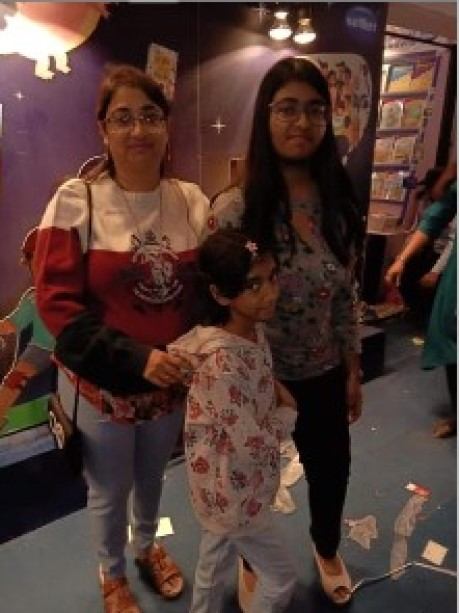
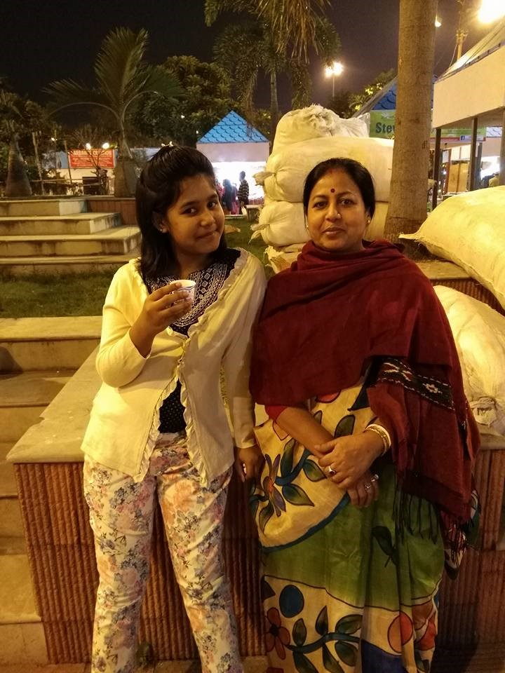

“A mother’s arms are more comforting than anyone else’s.” —Princess Diana
“I tell my kids, ‘I am thinking about you every other minute of my day.’” —Michelle Obama

“Biology is the least of what makes someone a mother.” —Oprah Winfrey

“Love as powerful as your mother’s for you leaves its own mark … to have been loved so deeply .. will give us some protection forever.” —J.K. Rowling